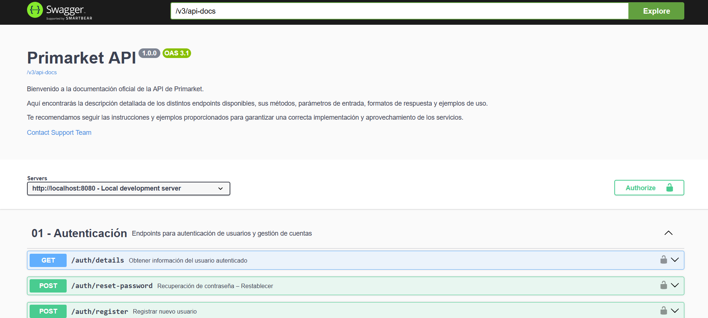

Desarrollador Backend Java — PRIMARKET
Jun – Dic 2025- Desarrollé más de 15 endpoints REST con Spring Boot, JPA/Hibernate y MySQL para una plataforma de e-commerce, aplicando principios SOLID y patrones de diseño.
- Implementé autenticación y autorización con JWT, protegiendo los servicios críticos y la carga y transferencia de archivos entre el frontend en React y el backend.
- Desarrollé el flujo de verificación de cuenta por correo: generación del código, envío, validación y control de expiración.
- Construí un chatbot interno de soporte que redujo cerca de un 30 % las consultas manuales del equipo.
- Documenté la API con Swagger / OpenAPI y JavaDoc, reduciendo el tiempo de integración entre equipos.
- Trabajé en equipo remoto con Git y GitHub bajo el flujo Git Flow (feature, develop, release, hotfix), metodologías ágiles y revisiones de código.
- Analicé la calidad del código con SonarQube, corrigiendo vulnerabilidades, bugs y code smells para cumplir los quality gates del equipo.
.png)


.png)
.png)

.png)